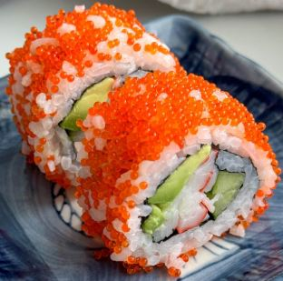

|

|
INGREDIENTS:
- Sushi rice
- Nori seaweed sheets
- Surumi (imitation) or crab sticks
- Avocado
- Black/White sesame seeds
- Masago (capelin roe)
STEPS:
- Cover the bamboo mat – Wrap your bamboo mat with plastic wrap. This is necessary to prevent rice from sticking to the mat and to allow easy clean up between rolls. You only need to do this once before you start making sushi, and replace it once finished – the surface is now much easier to clean in between rolls with a kitchen or paper towel.
- Nori – Take a nori sheet, and break it in half. If it doesn’t break easily, you can toast it for a few seconds or use scissors to cut it. Place one half on the mat, with the shiny side facing down. In this example I actually used the entire nori sheet to get a larger roll, although it’s more common to use half.
- Rice – Grab a handful of cooked and seasoned sushi rice (at room temperature), and spread it gently over the nori – about 1 cm high. There’s no need to press the rice down onto the nori, only spread it to cover the sheet. Cover the entire sheet if you are using half a nori, and the about 80% of it if you are using a full nori.
- Anything on top? – Sprinkle a spoonful of Masago or sesame seeds evenly over the top half of rice if you are using a full nori, or on all of it if you are using half a nori sheet.
- The old Fliparoo – Flip the nori so that the rice is now facing down on the bamboo mat. Next we are going to place the ingredients on top of the nori (and not the rice).
- First the crab sticks – Line up the crab sticks along the close end of the nori. The ones I have in the picture below are perfectly shaped for sushi. You might have to cut yours to fit it well into the roll.
- Then the avocado – Next to it, line up 1-2 thick slices avocado. You can use as much avocado as you want – just remember you need to be able to close the nori around it so don’t over do it.
Tip – if you’re not serving the dish immediately, you might want to squeeze a few drops of lemon on the avocado, to prevent it from turning brown.
- Almost there – Now simply Roll it inside out. You can find detailed instructions on how to roll inside out sushi here. Cut into 8 equal pieces. For best results first cut in half, then cut each half into two, and then again.
|